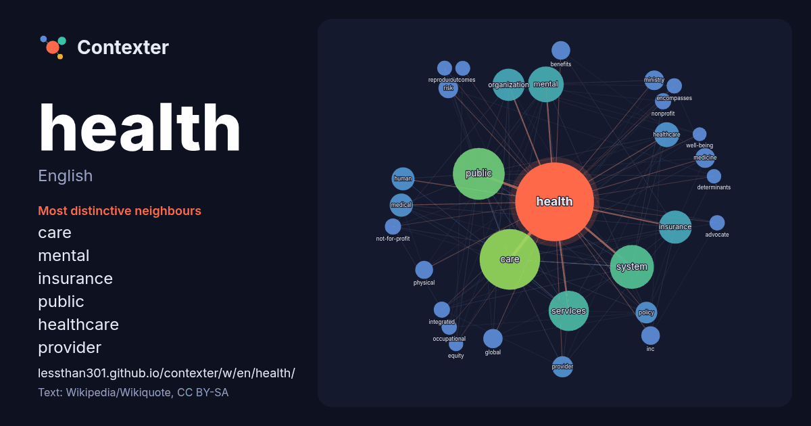

English · popular word
health
The words found around it in 1831 instances from English Wikipedia, Wikiquote and Hacker News.

Most distinctive neighbours
- care 144×
- mental 70×
- insurance 60×
- public 39×
- healthcare 39×
- provider 27×
- organization 26×
- system 24×
- not-for-profit 19×
- nonprofit 19×
- services 18×
- risk 18×
- medicine 18×
- occupational 17×
- benefits 17×
- inc 17×
- medical 17×
- encompasses 16×
- global 16×
- reproductive 16×
× = how many times more often than in general English Wikipedia text.
Most frequent neighbours
- care 265
- public 195
- system 140
- services 117
- mental 93
- insurance 79
- organization 75
- world 67
- american 58
- healthcare 45
- states 45
- national 41
- medical 39
- human 38
- social 38
- population 36
- company 35
- countries 34
- policy 34
- hospital 33
In context
- Health has a variety of definitions which have been used for different purposes over time and is a multidimensional concept. It commonly refers to physical Wikipedia snippets · Health
- HealtH (also known as Health and H.E.A.L.T.H.) is a 1980 American ensemble comedy film, the seventeenth feature project from director Robert Altman. It Wikipedia snippets · Health (film)
- Mental health encompasses emotional, psychological, and social well-being, influencing cognition, perception, and behavior. Mental health plays a crucial Wikipedia snippets · Mental health
- Health care, or healthcare, is the improvement or maintenance of health via the prevention, diagnosis, treatment, amelioration or cure of disease, illness Wikipedia snippets · Health care
- Oura Health Ltd (natively Oura Health Oy) is an international health technology company, known for the Oura Ring (stylized Ōura), a smart ring used to Wikipedia snippets · Oura Health
- Health is the debut album by American noise rock band Health. The album was recorded at the Los Angeles club The Smell. In 2014, NME listed the album as Wikipedia snippets · Health (Health album)
- Health administration, healthcare administration, healthcare management, health services management or hospital management is the field relating to leadership Wikipedia snippets · Health administration
- Health law is a field of law that encompasses federal, state, and local law, rules, regulations and other jurisprudence among providers, payers and vendors Wikipedia snippets · Health law
More English words
- art
- autumn
- bell
- bread
- bridge
- cat
- city
- climate
- clock
- death
- desert
- dog
- family
- food
- forest
- garden
- god
- gold
- heart
- history
- honey
- horse
- island
- language
- life
- map
- mirror
- money
- mother
- mountain
- nature
- power
- rain
- road
- salt
- science
- shadow
- silence
- song
- star
- storm
- summer
- tea
- time
- train
- truth
- water
- winter
- work
Precomputed on 2026-10-09 with default settings (±5 words, medium corpus). The interactive map can refresh it with live data.